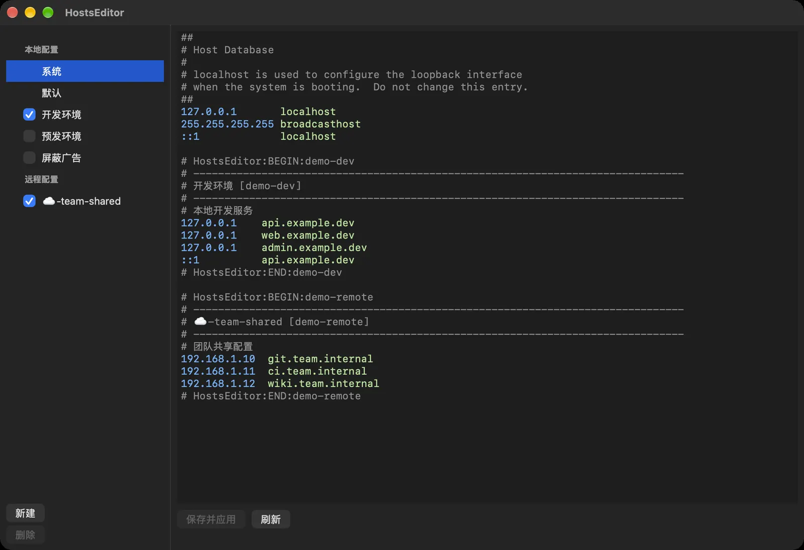

--profiles
多方案管理
创建多套本地 hosts 方案，按需启用、停用、复制或删除；多个启用方案组合后一起写入。
# macOS 上的 hosts 编辑与方案切换工具
为开发、测试、预发、线上环境各存一套 hosts。勾选即启用，多个方案组合后经特权 Helper 写回 /etc/hosts，写入后自动刷新 DNS 缓存。
latest · macOS 13.0+ · Apple 公证 · Sparkle 自动更新
↑ 勾选左侧方案，/etc/hosts 实时变化；点名称查看单个方案
02## features
每一项都来自应用的实际功能。
--profiles
创建多套本地 hosts 方案，按需启用、停用、复制或删除；多个启用方案组合后一起写入。
--apply
组合内容写入系统 /etc/hosts，写入后自动刷新 DNS 缓存，修改立即生效。
--remote <url>
从 http / https 地址拉取 hosts 保存为方案，可手动刷新，也可每小时、每 6 小时或每天自动刷新。
--backup 30
每次写入前备份旧内容，保留最近 30 份，可从「文件」菜单在访达中查看。
--menubar
状态栏图标列出全部方案，点一下即可启用或关闭，不必打开主窗口。
--highlight
注释、IP（含 IPv6）、主机名语法高亮，查找替换、⌘/ 批量注释，支持浅色和深色外观。
--import / --export
把本地 hosts 文件导入为方案，或把当前内容导出为文本文件。
--keep-original
只改写自己的管理块；写入前重新读取系统 hosts，不覆盖其他工具的修改。
--safe
有未保存的修改时窗口关闭按钮显示提示点，退出前二次确认。
# 另有：简体中文 / 繁體中文 / English 界面；Sparkle 按芯片架构分别推送更新
03## how-it-works
每个启用的方案写成一个带标记的块，块外的内容原样保留。
04## screenshot
左侧是方案列表，勾选即启用；右侧是带语法高亮的编辑器。

05## keybindings
06## getting-started
通常是系统里残留了旧版本的后台任务记录。先退出 HostsEditor，再在终端清理旧记录：
sudo launchctl bootout system/cn.vanjay.HostsEditor.Helper 2>/dev/null || true sudo launchctl bootout system/cn.vanjay.HostsEditorHelper 2>/dev/null || true
确认 /Applications 与 ~/Applications 里只有一份 HostsEditor.app，重新打开应用，点一次「启用或修复后台帮助程序」，再触发一次系统 hosts 的读取或写入。
前往「系统设置 › 通用 › 登录项与扩展程序」，允许 HostsEditor 的后台程序，然后重新启动应用。
打开「苹果菜单 › 关于本机」，看「芯片」或「处理器」一栏：显示 Apple M 系列选 Apple 芯片版，显示 Intel 选 Intel 版。
需要 macOS 13.0 或更高版本。安装包已通过 Apple 公证，打开 DMG 后把应用拖进「应用程序」即可；内置 Sparkle 自动更新，只推送与本机芯片匹配的版本。